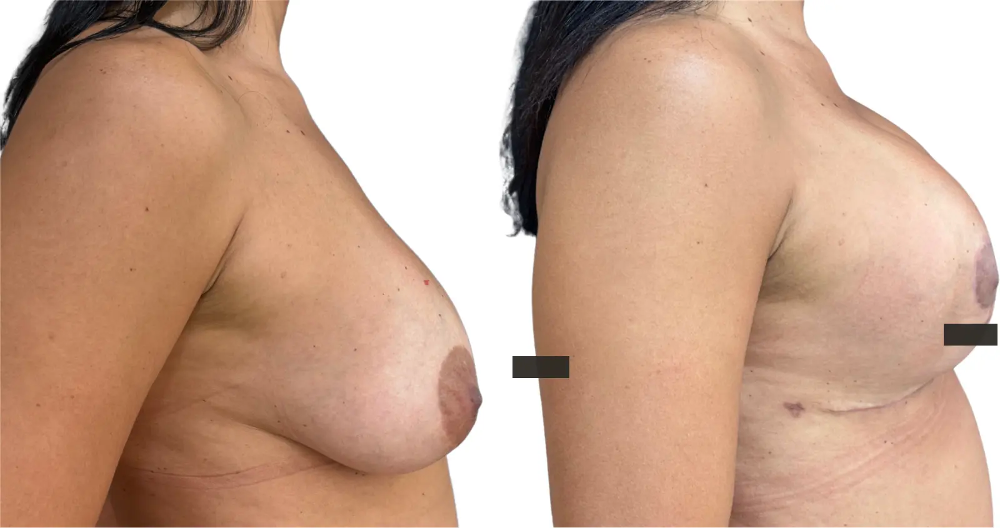

Queda mamária
Quando há perda de sustentação e aréola mais baixa.
A mastopexia é indicada para tratar queda das mamas e excesso de pele, com planejamento individual para melhorar forma, posição e harmonia corporal.
Atendimento na Clínica LIV Faria Lima, em Pinheiros. Consulta presencial e teleconsulta em casos selecionados.

A mastopexia reposiciona a mama e trata excesso de pele. A indicação considera grau de queda, posição da aréola, qualidade da pele, volume existente e o tipo de cicatriz necessário para remodelar a mama.
Quando há perda de sustentação e aréola mais baixa.
Quando o envelope de pele precisa ser ajustado ao volume da mama.
Quando há diferença de forma ou posição entre as mamas.
Quando a queixa principal é queda, a mastopexia pode ser suficiente. Quando também há esvaziamento ou desejo de preenchimento, a associação com prótese é discutida com cuidado.
A diferença está na relação entre queda, volume, pele e preenchimento desejado.
Quando há tecido suficiente e a prioridade é elevar e remodelar a mama.
Quando além da queda existe desejo de maior preenchimento ou volume.
Ver associaçãoQuando a queixa é volume e proporção, sem queda que exija retirada de pele.
Ver prótese
Na consulta, a Dra. Amanda avalia grau de ptose, posição das aréolas, sobra de pele, simetria, volume mamário e cicatrizes possíveis. A proposta é alinhar forma, sustentação e expectativa realista.
Avaliar ptose, sobra de pele e posição da aréola.
Discutir desenho, extensão e amadurecimento das cicatrizes.
Entender se há volume suficiente ou necessidade de associação.
Planejar sutiã, restrições e retornos pós-operatórios.
Antes da cirurgia, são avaliados exames, histórico de saúde, risco cirúrgico, tipo de anestesia, desenho das cicatrizes e cuidados no pós-operatório. Para cirurgias realizadas pela clínica, a avaliação cardiológica pode integrar o protocolo de segurança da LIV.
As fotos ajudam a ilustrar planejamento e cicatrização, mas cada resultado depende de anatomia, técnica, recuperação e cuidados pós-operatórios.

Imagem educativa de cirurgia mamária, sem promessa de resultado individual.
Imagens autorizadas e tratadas para privacidade. Não representam garantia de resultado individual.
A consulta diferencia mastopexia isolada, mastopexia com prótese, redução mamária ou prótese isolada. A técnica muda conforme pele, volume, posição da aréola e objetivo da paciente.
Não. Quando existe tecido suficiente e a queixa principal é queda, a mastopexia sem prótese pode ser discutida. A prótese entra quando há desejo ou necessidade de preenchimento adicional.
Sim. A mastopexia geralmente reposiciona a aréola junto com a remodelação da mama, respeitando proporção e anatomia.
Não necessariamente. O desenho depende do grau de queda, excesso de pele, formato da mama e técnica indicada.
A mastopexia remodela e eleva, mas não aumenta volume de forma relevante. Quando o objetivo inclui preenchimento, a associação com prótese pode ser considerada.
O envelhecimento, variação de peso, gestação, qualidade da pele e gravidade continuam influenciando a mama ao longo do tempo.
Rua Pais Leme, 215 · Conj. 710 · Pinheiros · São Paulo. Teleconsultas em casos selecionados, especialmente para orientação inicial ou pacientes de fora de São Paulo.
Ao enviar uma mensagem, a equipe entende sua queixa principal, orienta sobre o formato da consulta e informa os próximos passos com discrição. A avaliação pode ser presencial em Pinheiros ou, em casos selecionados, por teleconsulta inicial. O atendimento é particular; a equipe informa valores da consulta, disponibilidade, nota fiscal e próximos passos.
Você informa o que deseja avaliar e há quanto tempo isso incomoda.
A equipe explica consulta, agenda, valores e emissão de nota fiscal.
Na consulta, a Dra. Amanda define indicação, limites, segurança e próximos passos.
Envie uma mensagem para a equipe e receba orientação sobre consulta presencial em Pinheiros ou teleconsulta inicial em casos selecionados.